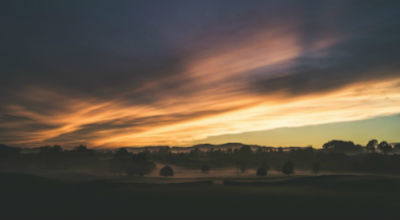

Gallery

Foggy Morning Photo by Wojciech Święch on Unsplash
Clear skies allow for an incredible view of the stars Photo by MJ Tangonan on Unsplash

Clouds make a dramatic sunrise Photo by Matt Jones on Unsplash
Snow caps the mountains at Mirror Lake Photo by fynn lehnert on Unsplash
Flowers and butterflies assure us that spring has come! Photo by Emiel Molenaar on Unsplash

Looking down a Mirror Lake in the summer. Visiting a nearby lake is the best way to beat the heat! Photo by Brian Erickson on Unsplash